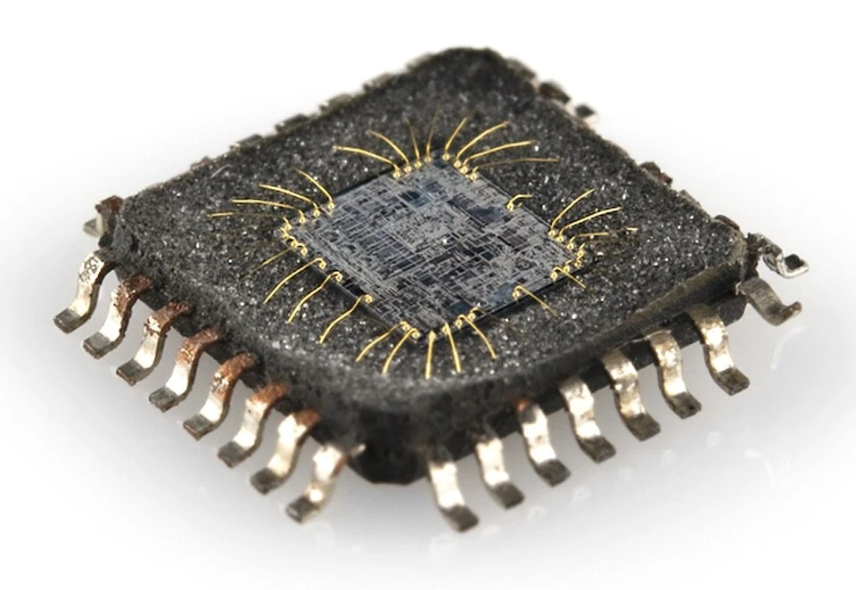
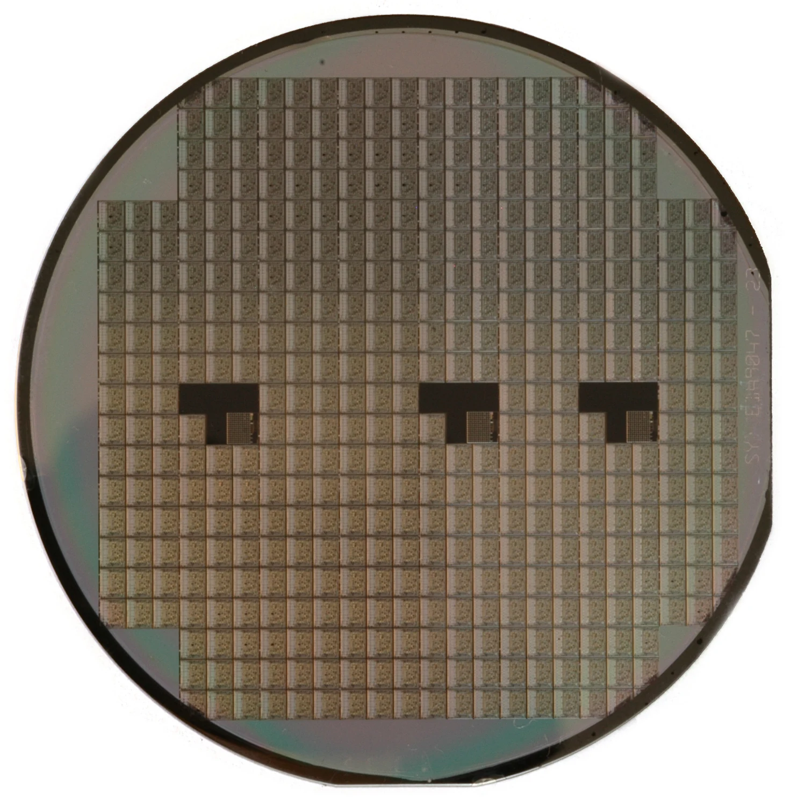
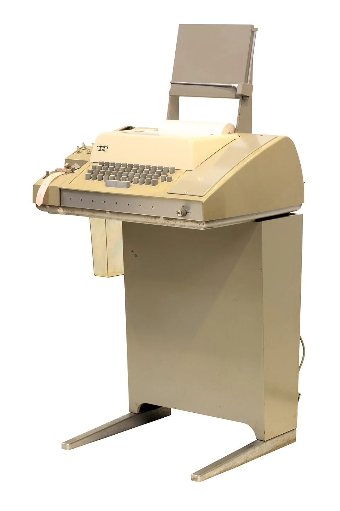
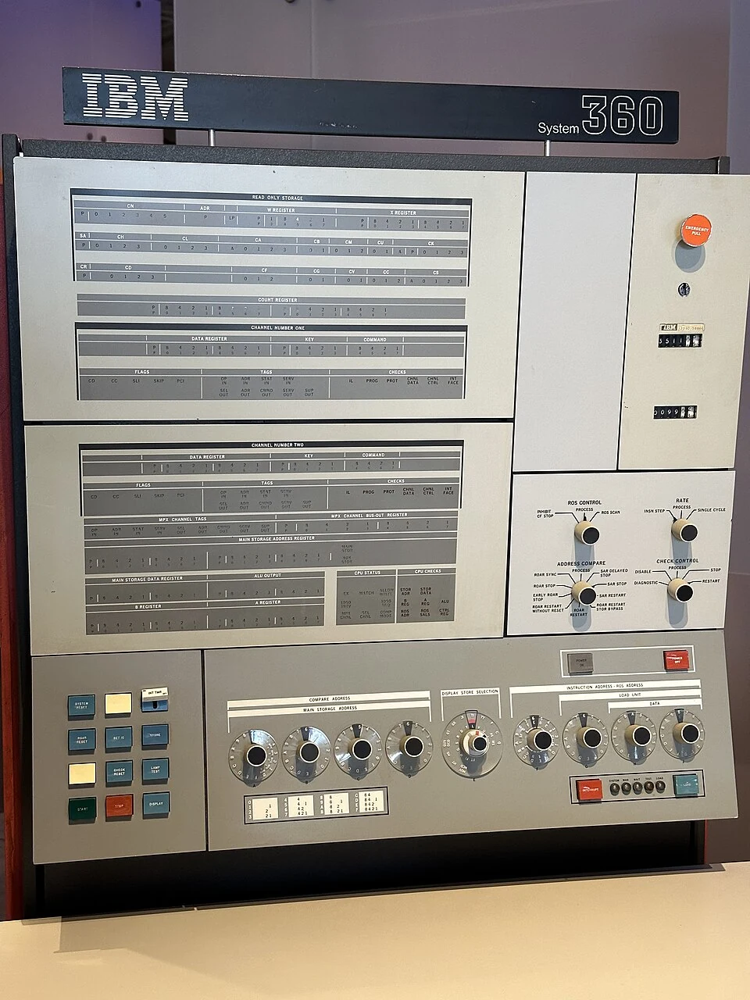
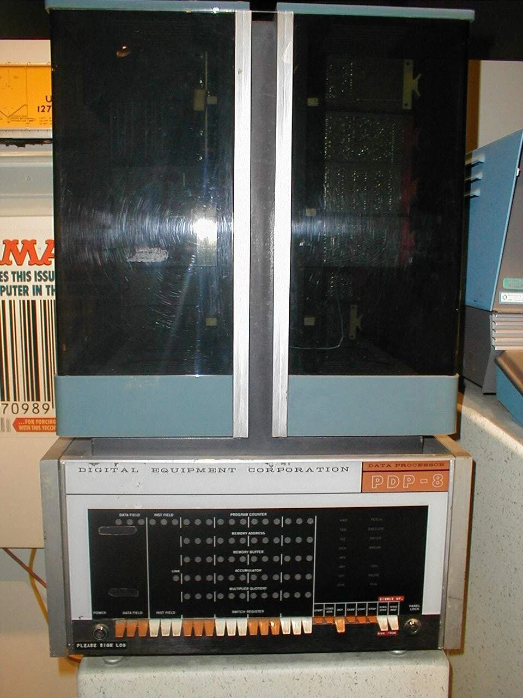

Muchos circuitos. Una sola pieza.
La integración electrónica permitió construir sistemas más compactos y potentes. La computadora empezó a entenderse como una plataforma: hardware, sistema operativo y programas capaces de trabajar en conjunto.
Explorar esta generación
Integrar para avanzar
Un circuito integrado reúne transistores y otros elementos en un pequeño sustrato semiconductor. En lugar de montar cada pieza de forma independiente, muchas conexiones se fabrican como parte del propio circuito. Esto acorta distancias, reduce conexiones externas y permite aumentar la densidad de componentes.
Los trabajos de Jack Kilby y Robert Noyce, a finales de los años cincuenta, fueron decisivos para esta tecnología. Su adopción no ocurrió en todas las computadoras al mismo tiempo: las generaciones describen tendencias, no una sustitución instantánea en una fecha universal.

El sistema operativo organiza el trabajo
A medida que crecía la capacidad de las máquinas, el sistema operativo adquirió un papel central. Administraba recursos como memoria, dispositivos y ejecución de programas. La multiprogramación permitía mantener varios trabajos preparados y aprovechar mejor el procesador cuando alguno esperaba una operación de entrada o salida.
El tiempo compartido permitió que distintos usuarios interactuaran con una computadora central mediante terminales. La máquina repartía breves intervalos de atención entre ellos. Esta experiencia ayudó a pasar del procesamiento por lotes a formas más interactivas de trabajo.

Una familia, programas compatibles
IBM presentó System/360 en 1964 con una apuesta por una familia compatible de máquinas. Para los clientes, crecer ya no debía significar empezar desde cero con todo el software. Es un referente de esta etapa, aunque sus módulos SLT empleaban tecnología híbrida, una precisión importante frente a la idea de que todos sus componentes eran chips monolíticos.
También se extendieron las minicomputadoras, que ofrecían recursos de cálculo a laboratorios y organizaciones con necesidades más acotadas. El tamaño y costo eran menores que los de grandes instalaciones, aunque «mini» no significaba necesariamente portátil ni doméstica.

Compartir recursos, ampliar usos
Universidades, empresas y centros de investigación aprovecharon estos sistemas para automatizar operaciones y explorar nuevas aplicaciones. Poder atender a más usuarios y ejecutar software más elaborado cambió la relación con la computadora: de recurso excepcional a infraestructura de trabajo.
La integración siguió aumentando. Si varios circuitos podían caber en un chip, el siguiente paso era concentrar las funciones de la unidad central de procesamiento. El microprocesador llevaría esta tendencia hacia la computación personal.

¿Qué hace un circuito integrado?
Elige una respuesta y comprueba lo que aprendiste.